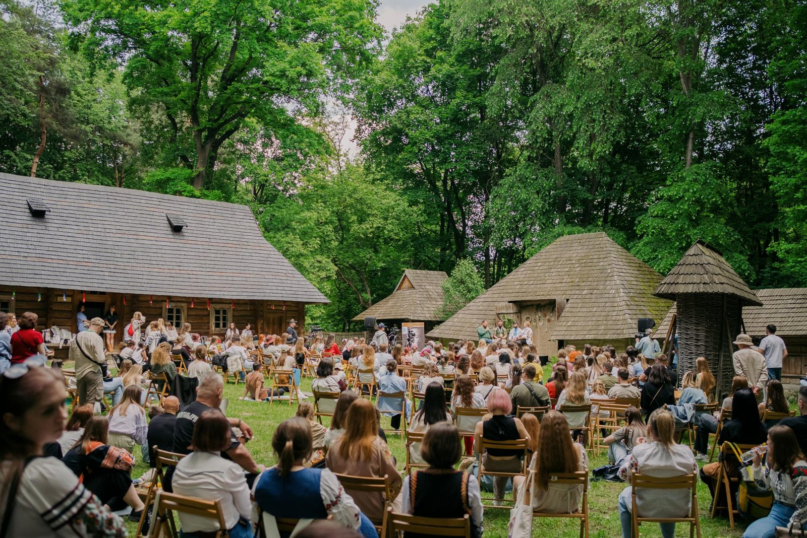
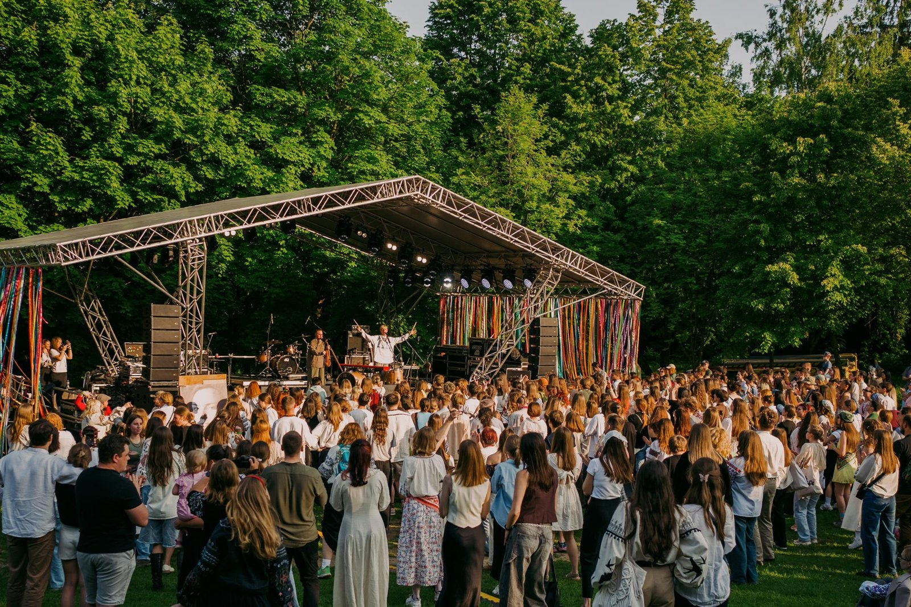

Коли ти живеш у часи непевності, як наші, не хочеться думати про майбутнє, хочеться жити. Встигнути відповісти на повідомлення, поговорити, купити квитки на концерт, випити смачної кави, пробігти, пробути, прожити.
Водночас смерть – те, що живе з нами поруч. Вона ходить з нами на каву, зустрічає нас на вулицях. Кожен її носить в собі через наших близьких, які загинули. І ми всі тепер живемо зі смертю. І з памʼяттю.
Мабуть, через те, що ми втрачаємо так багато наших найдорожчих людей, памʼять припинила бути тільки підручником, чи тільки днем. Тепер для нас памʼять – це наше життя.
«Смуток за людьми, яких ми втратили, накладає на нас відповідальність. І це відповідальність живих перед мертвими – свідчити про те, що відбулося, та про зло, з яким ми зіткнулися»
Усе те, що ми з вами як суспільство зробимо зараз, вплине на майбутнє – хочемо ми цього чи ні. Те, яким буде наша памʼять, впливатиме на життя, економіку, освіту та країну загалом. Від того, як ми запамʼятаємо цю війну, залежить, чи потрібні будуть оборонні підприємства у міжвоєнний період, чи буде у нас армія і яка та як ми відбудовуватимемо країну.
Власне від того, як ми памʼятатимемо, залежить і наше ставлення до ветеранів і військових. Ці чудові люди повернуться до цивільного життя, і памʼять про них і їхній внесок може стати нашим містком. А може і не стати. Залежить від усіх нас, як свідків цих подій.
Як же ми, як суспільство, зберігаємо цю памʼять?
Існують простори памʼяті. Наприклад, ними стали Михайлівська стіна, прапорці на Майдані, сектори військових поховань. Крім того, прапорці на Майдані – це ще й стихійне місце памʼяті, бо його створили люди. Це відповідь на державну чи місцеву бездіяльність.
А є речі, які ми можемо робити і щодня. Однією з них є хвилина мовчання – дія, яка дуже важлива у своїй простоті. Перші згадки про цей ритуал є ще за часів Першої світової війни.
Але своєю щоденністю ми зробили цей ритуал особливим: бо для когось це хвилина честі, хвилина гідності, хвилина, що має значення, а хтось згадує імена своїх людей, хтось думає кому з друзів, які у війську, напише сьогодні. Для нас тепер це справді універсальна щоденна дія, де подумки можеш заземлитись. Де ми всі з вами на цю одну хвилину опиняємося в спільному просторі памʼяті.
Не вигадали поки принципу за яким держава могла б запамʼятати всіх загиблих і вбитих росією. Але це можемо зробити ми з вами. Як і казала Іра, як свідки цих подій. Тому ми створили фестиваль памʼяті ЧекаFest. Він показує, що памʼять ніколи не про смерть, вона про життя людини, яка жила, любила та мріяла.
Іра любила українську музику. Маринка Круть, її подруга й українська бандуристка зібрала артистів для музичної частини, щоб всі змогли послухати і полюбити наше українське. Цього року будуть ДахаБраха, Пиріг і Батіг, ЩукаРиба.
Іра багато вчилася. Юра, її брат зібрав людей для освітньої сцени навколо теми «ідентичність». Ми будемо з вами її винаходити через памʼять, літературу, особисті зусилля та вибір і через історії Ірини, безпосередньо.
Іра багато говорила про памʼять і багато робила для суспільної памʼяті. Тому ми, від «Вшануй» зробимо простори для того, щоб ви змогли познайомитися з Ірою справжньою, а ще розказали нам про своїх людей.
«Чека» рятувала життя на війні. І навіть після смерті продовжує це робити. Минулого року, на фестивалі ми зібрали більше двох мільйонів на Госпітальєрів. Цього року збираємо на наземні роботизовані комплекси, які рятуватимуть поранених, для 503 батальйону, з якими працювала Іра.

Мабуть, цей фестиваль не лише про «Чеку», він про те, щоб кожен згадував, ділився і був чесним. А ще щоб знаходив своє: що почитати, послухати, подосліджувати. Між собою ми говоримо, що це простір для своїх.
І, звісно, 10 пісень, які заповідала Іринка. Будемо співати біля ватри.
Ми будемо сміятися і плакати, багато згадувати. Про Іру такою як вона була – дівчиною, яка мріяла про свій дім із «помідорами у високих грядках», любила подорожі, хотіла гарну освіту для брата і здоровʼя для батьків.
Її «хочу їсти цукерки „ліщина“, гортаючи сторінки якоїсь художки». Чека казала, що «війна – не місце моєї реалізації», бо «я хотіла і хочу працювати з полісі про національну памʼять». Це було у 22-му.
Іро, тепер ти наша «полісі» про національну памʼять…
Своїм прощанням вона показала нам на практиці, що памʼятаючи можна співати, танцювати, продовжувати жити. Як би складно не було. Пані Оксана, мама Іри, продовжує писати писанки, щоб не втратити себе.
Маринка Круть віддала свою останню струну для Іринки, але її бандура продовжує грати. Юра продовжує проводити екскурсії, тільки тепер про сестру. А ми – продовжуємо нести культуру памʼяті, адвокатувати «хвилину мовчання» та проводити фестиваль у її памʼять.

Іра говорила, що національна трагедія, якою є війна, впливає на нашу ідентичність через жертовність. Ми цією жертвою обʼєднані, і вона робить нас частиною зграї. Спільні терпіння єднають більше, аніж спільні радощі.
Єднають не лише, щоб пройти через горе і втрату, але й щоб мати мотивацію продовжувати захищати своє, не мовчати на несправедливість і чітко розуміти хто ти.
«Не сумуйте за мною, життя дуже коротке, якщо воно продовжується після смерті, то побачимось»
Іро, ми дуже стараємося продовжити твоє життя після смерті.
Давайте бачитись.